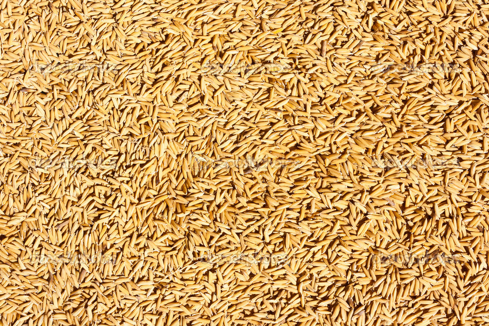
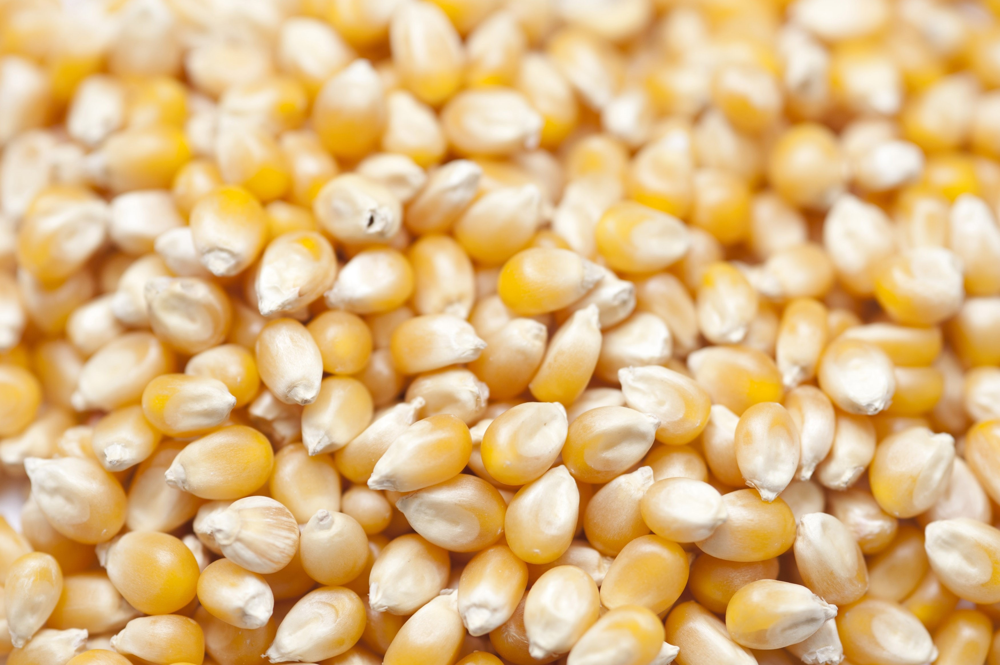
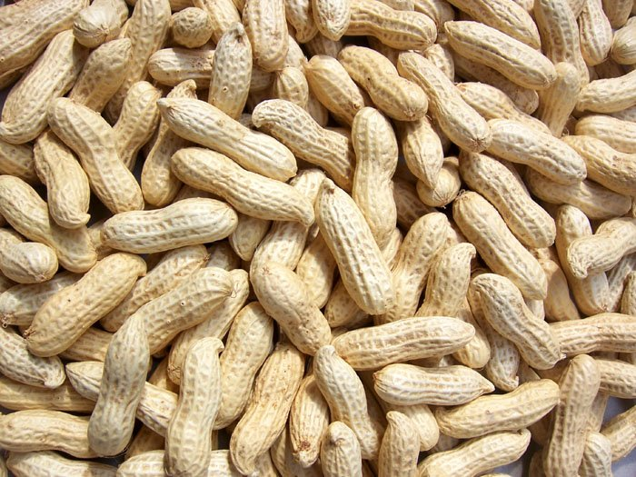
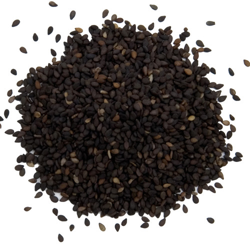
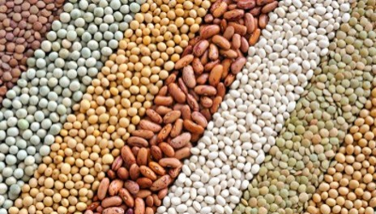
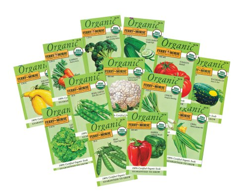

Seed Preservation
Rice Seed Preservation

Preservation of good quality seed is the prime requirement for better harvest in thecoming season. Rice field having no weed infestation, no disease and insect pest
attack and free from off types is the right choice for seed collection.
Harvest rice at the proper ripening stage, thrash, dry, winnow and store at right relative humidity and temperature.
Consider following points during seed storage-
• Dry seed to reduce seed moisture content below 12%.
• Sort out fully filled grains while winnowing.
• Preserve seed in air sealed container.
• If earthen pot is used, coal tar may be used to coat outer surface of the container.
• Thick polyethylene bag can be used for seed storage.
• Sun dried seeds should be put into container in full after cooling in shadow place.
• Make the container air tight and keep it above ground.
• Use dried leaves of Azadiracta indica @ 3.25 kg/ton rice seed for preventing insect attack.
Wheat Seed Preservation

In case of seed plot, the off type plants should be rouged out at least 3 times starting from flowering up to maturity stage to ensure varietal purity.
Crop should be harvested at full maturity in a sunny day. Usually, wheat is
harvested by hand.
Wheat should be threshed by paddle thresher or power thresher.Wheat seeds should be dried up under sun to bring the moisture below 12%.
It may be confirmed by chewing the dried grain. Grain should be cleaned and graded.
For cleaning, paddle or power winnower can be used.After final sunning, seeds should be cooled in a shady place.
Then the seeds are to be stored in metallic or plastic drum and polythene bag. All the drums or bags should be air-tight. Polythene bags should be kept inside gunny bags. All the containers should be placed on wooden “Danish” or “Matcha”away from the wall.
Maize Seed Preservation

Harvesting should be done when plants show distinct signs of drying, the husk cover
is completely dry and the grains are fully mature. Grain maturity could be identified
from the milk line of kernels or the formation of a black layer at the junction of grain and placenta.
Premature harvesting reduces the yield and the germination ability of
the seed. If possible, a prompt harvest of the seed crop after it reaches physiological
maturity is recommended, as delays will unduly expose the seed to temperature,
rainfall, diseases and insects, bird damage, and theft.
It is commonly harvested with 15 to 25% moisture content. Harvesting fully mature grain would result in maximum yield, improved appearance and reduced susceptibility to injury from high dryingtemperatures.
The cobs are separated from the stem and the plants are cut near the ground. Soon after harvesting, the cobs should be dehusked and sundried for about 2-3 days. Dried cobs are shelled either by corn sheller or by hand. Both power and manually operated sheller could be used.
The shelled kernels should be dried again before storing at optimum moisture level of
12 to 13 percent.
Drying is important before storage to avoid deterioration, reduction of seed borne
insect and diseases attack and to maintain viability of seed.
If maize grains are used for seed purpose, it may be treated with a fungicide or a combination of fungicide and insecticide to protect it against attack by diseases and insect pests. The treatment should be done before logging and storage.
Groundnut Seed Preservation

When plants become mature, the leaves of the lower parts of plants become yellow.
Surface of pods become rough and hard, veins become prominent, inner surface of
pods shell becomes blackish in colour. Cover of kernels become brown in colour.
These are the ideal condition when the crop is ready for harvest.
Pods should be dried for 8 hours after harvesting. Moisture content of pods should be
8-9%. Seeds should be cooled and then stored after sun drying.
For storing groundnut, different types of containers may be used. If seeds are stored in air tight condition whether polythene bags and synthetic bags, the quality of seeds and viability of seeds are restored for more than one year but during rainy season, seeds should be checked and dried and kept in the same container.
Sesame Seed Preservation

Sesame plants mature within 85-90 days. All capsules do not mature at a time. Plants
should be harvested before drying of capsules.
Harvested plants should be kept in heaps for 3-4 days. The plants should be dried in the sun for few days and then threshing should be done.
Seeds should be dried for 2-3 days in the sun.
When moisture content of seed is at 8-9% then seeds should be stored in the bags or a tin container in a cool and dry place.
Pulse Crop Seed Preservation

Pulse Crop should be properly stored because seed is vulnerable to heavy insect damage.
The seeds should be cleaned, dried thoroughly in sun and moisture content should be
lowered down to 8-9 %.
Then seeds should be cooled and kept either in sealed polythene bags along with naphthalene balls covered by jute bags, tin containers or air tight earthen pots in store rooms.
Finally, seed should be stored in dry and above
ground place.
Vegetable and Flower Seed Preservation

All vegetable and flower seeds will store on a shelf at room temperature for at least one year without significant loss of germination. If there is enough seed for several years, then take further steps to ensure viability.
A 10-year storage life can be achieved by drying seed to less than 8 percent moisture. To do so, dry seed at 100 degrees F for six hours. Obtain this temperature by spreading the seed out in direct sunlight.
However, because sunlight is harsh and easily can exceed this temperature, drying in the shade is better.
Never use a microwave oven. You may use a conventional oven if you keep the door open and the seed is not heated to more than 100 degrees. Package the seed in moisture-proof containers and store it in a refrigerator or deep freezer.
A moisture-proof container is one that stores seed safely while submerged in water. Use sealed cans or jars, rather than plastic bags.
More Info